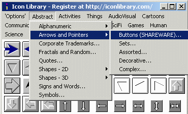
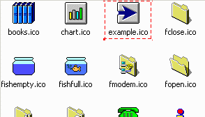
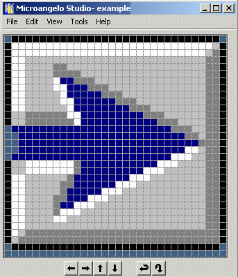
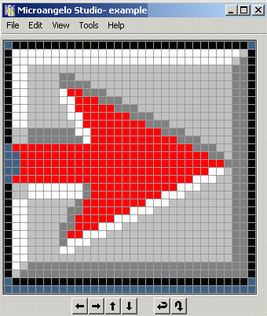
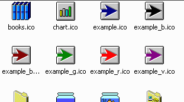
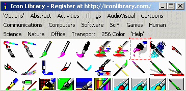
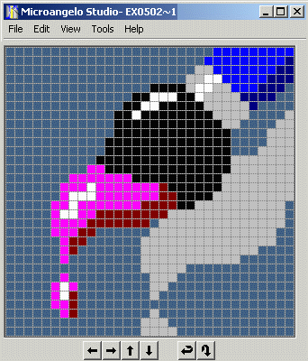
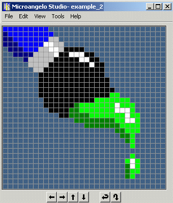
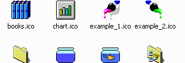

Deriving Your Own Icons
Top
You can create your own icons starting with the ones in Icon Library. Since Icon
Library does not have editing features, you will need an icon editing program such
as
MicroAngelo. Of course, you can
create your icons from scratch, but it is often easier to have an image to start
from.
- You want to use one of the icons in Icon Library but it has the wrong
color. Extract the icon from Icon
Library, for example the first arrow icon in the
Abstract>Arrows and Pointers>Buttons category, and save
it in your c:\icons folder.

- The saved icon, example.ico should now appear in the
c:\icons folder.

- Open this icon using MicroAngelo or your favourite icon editing
tool. This demonstration uses
MicroAngelo.

- Using the palette tool, change the color of the arrow.

- Save the new icon using a different name, for example,
example_r.ico. While you have MicroAngelo open, you can color
and save several more icons.

- Here is another example. You have found a paintbrush icon that is
almost what you want but the icon has to be reflected horizontally,
have a drop shadow removed, and a color changed. This is the icon from the
Icon Library collection that you extract into the c:\icons folder.

- Open this icon using
MicroAngelo.

- Using various MicroAngelo tools, remove the drop shadow, change the
color of the paint on the brush, and flip the image horizontally.

- After saving the result as a new image, here are your two icons in
the c:\icons folder. This new icon took less than a minute to
create. Trying to draw it from scratch would probably have taken much
longer. Icon Library has a collection of more than 20,000 icons, many
of which can be used as a starting point for your own creations.

- There are many other manipulations you can make to icons such as
drawing extra objects into the icon, removing objects from the icon,
rotating the icon, shifting the image within the image space, or changing
the shape of an image within the icon. If you use
MicroAngelo, you can
manipulate icons of all sizes and color depths.
- You can save icons as bitmaps
for use in web pages and other graphics applications.